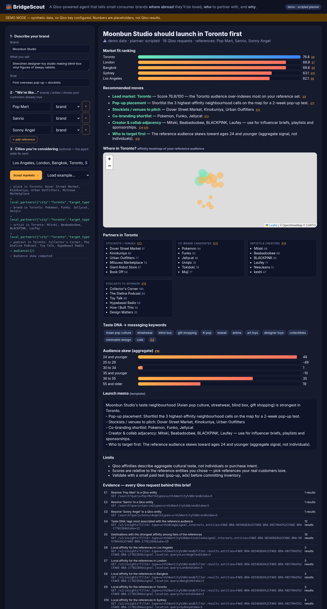

🌉 BridgeScout
Tell it what your customers already love — BridgeScout uses Qloo's cultural taste graph to pick the first overseas city, neighbourhood, stockists, and co-brand partners.
Live demo
Primary demo (Render free tier). First load may take ~30–60s while the free instance wakes.
What it does
- Resolves brand references via Qloo search
- Scores candidate cities with destination + location affinity
- Maps neighbourhood heatmaps and local partners (places, brands, artists, podcasts)
- Demographics + cited launch brief — every claim links to evidence E1…En

Run locally (one-liner)
git clone https://github.com/dongwei-polyred/bridgescout.git cd bridgescout python3 -m venv .venv && . .venv/bin/activate pip install -r requirements-dev.txt cp .env.example .env # add QLOO_API_KEY for live mode set -a; . ./.env; set +a uvicorn bridgescout.app:app --reload --port 8000 # open http://localhost:8000?autorun=1
Without QLOO_API_KEY the app runs in labelled DEMO mode with synthetic data.
Deploy your own (Render)
- New → Blueprint → select
dongwei-polyred/bridgescout(usesrender.yaml+ Dockerfile) - Set secret
QLOO_API_KEY(optional:LLM_API_KEY/LLM_BASE_URL/LLM_MODEL) - Deploy — health check at
/api/health
MIT License · Built for Qloo Agentic Hackathon · Aggregate taste only, no personal data.